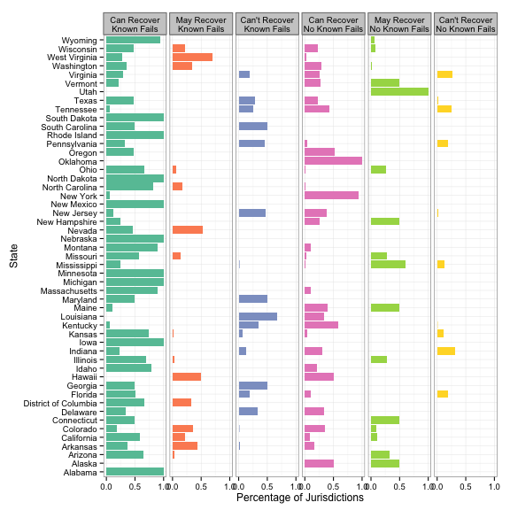

Reliable voting machines?
|
 |
Machines have been categorized by whether or not they have failed to properly record or tabulate votes in previous elections and also by whether they produce any sort of paper trail that can be used to manually tabulate votes. It appears that many states are vulnerable to machine failures, though most of these states could recover if the failure was identified. There are quite a few states which use machines with known flaws that produce no paper trail (third column), and these states should be of the most concern - particularly Florida and Virginia, which are swing states for the presidential election. Ballot RecoveryMachines which produce re-countable ballots were scored as "Can Recover", machines which produce receipts that may or may not be useful in a recount were scored as "May Recover" (due to the proprietary nature of these machines, it is not always certain that recovery efforts will be successful in this case), and machines which directly record the votes electronically without producing a paper trail were scored as "Can't Recover".Machine FailuresUsing a list of documented voting machine errors, we recorded the model number of all machinens that have been verifiably determined to be inaccurate ("Known Failures"). Some of the reported errors are due to software specific to the election in question, but many others are the result of hardware or machine firmware problems. In addition, the errors which were used in this analysis are of varying severity - calibration errors are not as likely to be as systemic as errors which occur in the tabulation of an entire group of ballots, as in the 2004 Democratic primary in California, or errors which cause "phantom votes" to be tabulated, as in one Colorado county in 2005. This analysis does not distinguish "levels" of errors, but could be expanded to do so, if a more comprehensive dataset were available.MotivationAfter the now-debunked rumors broke that Mitt Romney's son had invested in Hart InterCivic, one of the 3 main manufacturers of electronic voting equipment, we decided to investigate the reliability and accuracy of the voting machines that will be used in this year's election. There have been documented cases of indetectable hacking of machines in previous years, but there are also many more common, though less nefarious documented cases of electronic equipment reporting erronious results (PDF Link). As many of these machines are still in use despite questionable security precautions, we examined the relative frequency of machines in each county or voting district.Further Reading
|